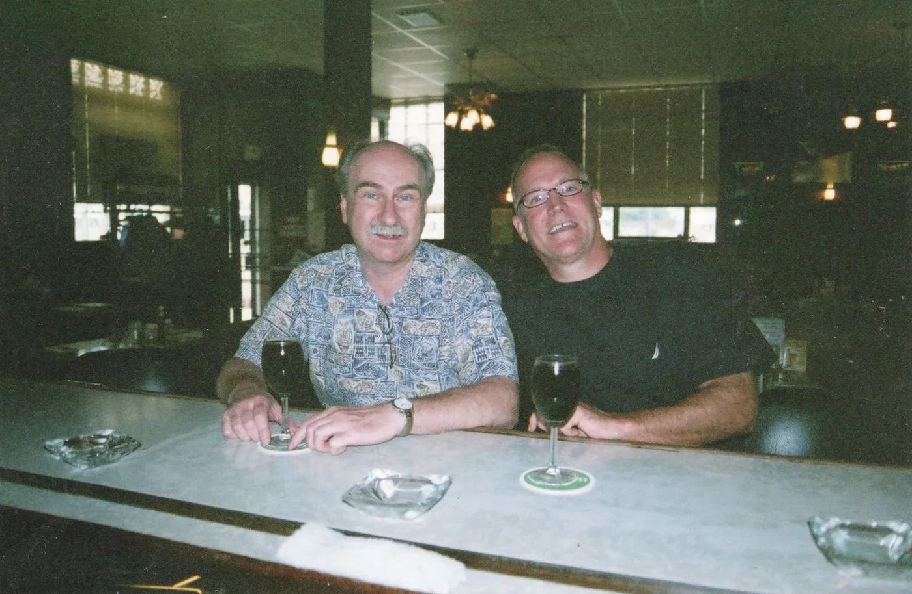

Jeff & Chuck's Excellent Adventure!
Our hiking plans for Shenandoah National Park, with Skyland Lodge as home base.
Map & drives from Skyland
Possible hikes
- Stony Man via the Appalachian Trail
A 1.6-mile round trip from Skyland’s north entrance to a rocky overlook above the valley.
1.6 miles · 340 feet elevation gain - Marys Rock · North Approach
Climb from Panorama to a west-facing summit above the Shenandoah Valley. The round trip is 3.7 miles.
3.7 miles · 1,210 feet elevation gain - Hawksbill Summit Trail
A steep 1.7-mile round trip from Hawksbill Gap to the park’s highest summit.
1.7 miles · 690 feet elevation gain - Bearfence Mountain Trail
A short exposed rock scramble with a summit panorama, plus a separate viewpoint hike that bypasses the scramble.
1.1 miles · 239 feet elevation gain - Hightop Peak Trail
A three-mile out-and-back on the Appalachian Trail to a west-facing rocky overlook.
3 miles · 935 feet elevation gain - Calvary and Chimney Rocks Trail
A 3.4-mile out-and-back from Riprap to rocky overlooks and a view across the gorge.
3.4 miles · 830 feet elevation gain - Pass Mountain Loop
A woodland hike from Panorama to Pass Mountain Hut, with a short loop on the return.
3.4 miles · 670 feet elevation gain - Sugarloaf Loop
A North District woodland circuit returning by the Appalachian Trail near Hogback Overlook.
5.0 miles · 1,120 feet elevation gain - Browns Gap
A full-day circuit linking three waterfalls on Doyles River and Jones Run.
6.5 miles · 1,400 feet elevation gain - Old Rag Mountain Loop